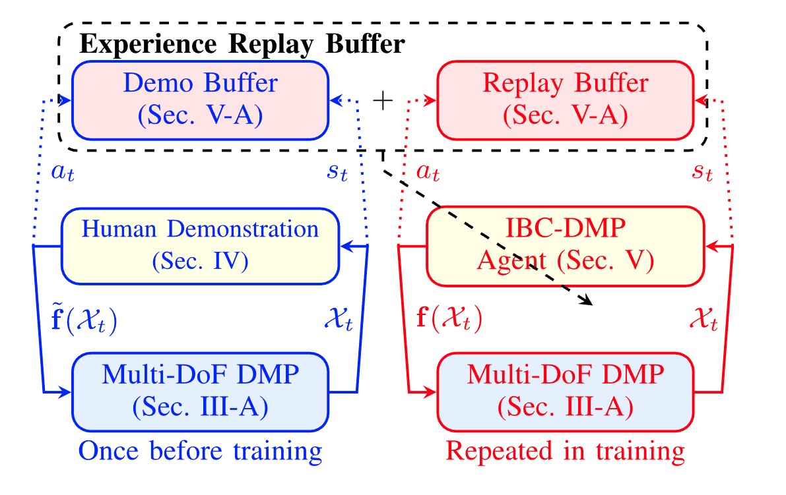

Amir Mehdi Soufi
I am a Ph.D. Candidate at the University of Victoria in Canada. I have worked on multiple robotic and intelligent systems projects, mostly focused on applied Reinforcement Learning. My interests include reinforcement learning, representation learning, deep generative models, simulation and modeling, robot design and control, and intelligent manufacturing. Previously, I studied control theory and applied design and worked as a mechanical design engineer and automation engineer.
Education
-
Ph.D. Mechanical Engineering, University of Victoria / University of British Columbia, BC, Canada | Sep. 2020 – Present
-
M.Sc. Mechanical Engineering – Control Systems, Sharif University of Technology, Tehran, Iran | Sep. 2016 – Aug. 2018
-
B.Sc. Mechanical Engineering, Sharif University of Technology, Tehran, Iran | Sep. 2012 – Aug. 2016
Current Projects
- Transformer-Encoder-Decoder for Zero-shot Adaptation: Developing a Transformer-based task-conditioned meta-RL model that encodes the embedding of interaction histories. Designed for sample-efficient generalization to unseen manipulation tasks using representation learning in high-dimensional state-action spaces.
- Guided Diffusion for Path Planning: Collaborating on the development of a guided conditional diffusion model for robot manipulators. The model adapts to the environment and robot variations by encoding 3D point-cloud observation, enabling robust generation of feasible motion trajectories in high-dimensional planning spaces.
Selected Publications

Using Implicit Behavior Cloning and DMP for Robot Motion Planning
Z. Zhang, J. Hong, A. M. S. Enayati, and H. Najjaran.
IEEE Transactions on Robotics

Meta SAC-Lag: Towards Deployable Safe Reinforcement Learning
H. Honari, A. M. S. Enayati, M. G. Tamizi, and H. Najjaran.
IEEE IROS 2024

Facilitating Sim-to-Real via Intrinsic Stochasticity
A. M. S. Enayati, R. Dershan, Z. Zhang, D. Richert, and H. Najjaran.
IEEE Transactions on AI

Exploiting Symmetry and Heuristic Demonstrations
A. M. S. Enayati, Z. Zhang, K. Gupta, H. Najjaran.
Submitted to Springer Neural Computing & Applications

A Methodical Interpretation of Adaptive Robotics
A. M. S. Enayati, Z. Zhang, H. Najjaran.
Neurocomputing, 2022

Extended Reality for Enhanced Human-Robot Collaboration
Y. Karpichev, T. Charter, J. Hong, A. M. S. Enayati, H. Honari, M. G. Tamizi, and H. Najjaran.
IEEE ROMAN 2024
Visual Deformation Detection Using Soft Simulation
J. Sol, A. M. S. Enayati, and H. Najjaran.
IEEE CASE 2024

Ego-Motion Aware Target Prediction for Multi-Object Tracking
N. Mahdian, M. Jani, A. M. S. Enayati, and H. Najjaran.
arXiv
Patents
- M. Durali, M. H. Heydari, A. M. S. Enayati, S. M. Hosseini. Testing mechanical overspeed protection systems, US Patent No. 2024/0003264 A1, 2024.
- M. Durali, M. A. Soleimani, F. F. Shabani, A. Habibollahi, A. Sohbatloo, A. M. S. Enayati. Controlling acoustics of a performance space, US Patent No. 2019/0292774 A1, 2019.
Work Experience
University of Victoria / UBC — BC, Canada Sep. 2020 - Present
- Graduate Research Assistant @ Advanced Control & Intelligent Systems Lab
- Co-Instructor & Teaching Assistant
- Delivered lectures and labs for Applied Machine Learning for Mechanical Engineering
- Assisted in Robotics, Dynamics, Control Systems, and Advanced Control courses
Durali System Design & Automation (DSDA Co.) — Tehran, Iran Mar. 2016 - Mar. 2020
- Project Lead
- 6-DOF Hydraulic Motion Simulator
Mechanical & hydraulic design, mechanism optimization, and manufacturing a scaled prototype of a heavy-payload simulator.
- Mechanical Engineer
- City Theater & Orumieh Theater Machinery
Led the mechanical design team in the automation/renovation project of Iran's largest theater. Built mechanisms and managed onsite commissioning.
- Acoustic Robotic System
DfM-focused redesign for scalable production of robotic acoustic systems.
- Mechanical Overspeed Safety Test Bench
Designed, built, and commissioned a testbench for turbine safety devices.
S. Rezaei Research Center (SRRC) — Tehran, Iran May 2015 - Dec. 2015
- Mechanical Engineering Intern
- Built an electric motorcycle as a member of an Undergrad team for the 5th Iranian Machine Design Competition — won Best Design Award